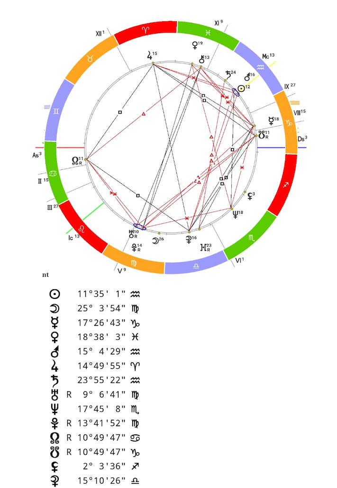

चरण 5. अभ्यास
अभ्यास के बिना सिद्धांत निर्जीव है। ग्रह, राशियाँ, भाव और पहलू (aspect) सीख लेने के बाद अपने आसपास के लोगों पर अभ्यास शुरू करें — दोस्तों, सहकर्मियों और रिश्तेदारों पर।
कुंडली की गणना कहाँ करें
हाथ से कुछ भी गिनने की ज़रूरत नहीं: कुंडलियाँ ऑनलाइन मुफ़्त में बन जाती हैं। सुझाया गया प्रोग्राम है Sotis-Online: एक पेशेवर उपकरण, जो ब्राउज़र और फ़ोन दोनों पर चलता है और जन्म कुंडली, गोचर (ट्रांज़िट) तथा सिनैस्ट्री (दो कुंडलियों की तुलना) बनाता है।
गणना के लिए जन्म की तारीख़, सटीक समय और स्थान चाहिए।
जन्म कुंडली का उदाहरण

इस उदाहरण में क्या दिखता है और इसे कैसे पढ़ें:
- सूर्य ☉ कुंभ के 11° पर — व्यक्तित्व का केंद्र: स्वतंत्रता, मौलिकता, भविष्य की ओर झुकाव।
- चंद्र ☽ कन्या के 25° पर — भावनात्मक प्रकृति: व्यावहारिक देखभाल, बारीकियों और स्वास्थ्य पर ध्यान।
- मंगल ♂ और शनि ♄ भी कुंभ में, सूर्य के पास — एक ही राशि में ऊर्जा का बड़ा जमाव (स्टेलियम)।
- लग्न (As) कर्क में — पहली मुलाक़ात में व्यक्ति कैसा दिखता है और कैसा व्यवहार करता है।
- ग्रह के पास R चिह्न का अर्थ है वक्री गति — उसकी ऊर्जा «भीतर की ओर» मुड़ी होती है, देर से या असामान्य ढंग से प्रकट होती है।
अभ्यास की योजना
अपनी कुंडली बनाएँ
शुरुआत खुद से करें: अपने «क्लाइंट» को आप सबसे अच्छी तरह जानते हैं और तुरंत देख लेंगे कि क्या सटीक बैठता है और क्या नहीं।अपनों की कुंडलियों का विश्लेषण करें
दोस्त, सहकर्मी, रिश्तेदार — ऐसे 10–20 लोगों की कुंडलियाँ जिन्हें आप अच्छी तरह जानते हैं। जो पढ़ा, उसे वास्तविक जीवन से मिलाएँ।सामान्य से विशेष की ओर बढ़ें
पहले तत्व और गोलार्ध (ग्रह कहाँ इकट्ठा हैं), फिर सबसे बलवान ग्रह और केंद्र बिंदु, फिर भाव और पहलू। ब्योरों में न उलझें।नोट्स रखें
विश्लेषण की एक कॉपी बनाएँ: अनुमान → जाँच → निष्कर्ष। 20–30 कुंडलियों के बाद आपको अपनी काम की विधियाँ दिखने लगेंगी।
कोर्स: ज़रूरी हैं या नहीं?
सारी जानकारी खुले में उपलब्ध है, और ऊपर बताई गई योजना स्वयं शुरुआत करने के लिए पर्याप्त है। अगर व्यवस्थित पढ़ाई और प्रतिक्रिया (फ़ीडबैक) चाहिए, तो कोर्स किया जा सकता है। एक अच्छा उदाहरण है सेंट पीटर्सबर्ग में कोंस्टांटिन दारागान की ज्योतिष अकादमी: कुल मिलाकर उपयोगी, पर अनिवार्य नहीं।
अभ्यास का मुख्य नियम: ज्योतिष समझने का एक उपकरण है, फ़ैसला नहीं। किसी भी ग्रह-योग को व्यक्ति अलग-अलग स्तर पर जी सकता है — कुंडली संभावनाएँ और कार्य दिखाती है, पत्थर पर खुदी नियति नहीं।
सिद्धांत को सजीव व्याख्याओं से पूरा करें — ऑडियो व्याख्यान →